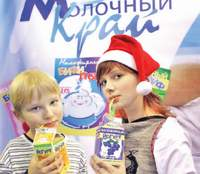
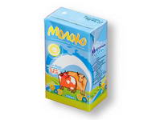
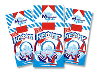
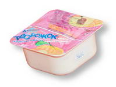
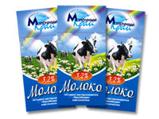
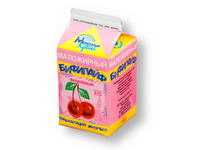
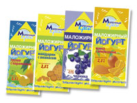

Комбинат детского питания
Основан в 2001 году
Телефон в Хабаровске:
54-32-94
О компании
 Наше предприятие было организовано в 2001 году по федеральной государственной программе «Дети России». «Молочный край» — единственное предприятие подобного профиля на Дальнем Востоке. Только мы делаем продукцию для детского питания. Наша продукция поставляется в города Хабаровского края, в Приморье, Еврейскую Автономную область, на Камчатку, пытаемся выйти на рынок Амурской области. Мы являемся одним из лидирующих предприятий по изготовлению молочных продуктов в нашей области. Ассортимент, предлагаемый нашей компанией, весьма разнообразен и включает десятки наименований изделий: от традиционных молочных продуктов до кисломолочных с «живыми» бифидобактериями. Нашими партнерами являются крупнейшие частные организации и предприятия государственного сектора. Вы заинтересованы в приобретении натуральной молочной продукции? Мы будем рады с Вами сотрудничать! Мы поставляем на рынок продукцию только проверенного качества. Доступные цены и высокое качество продукции нашего комбината завоевали всеобщую любовь и доверие покупателей. Нам не безразлично здоровье настоящего и будущего поколения!
Ассортимент
Молоко детское

Кефир

Положительно воздействует на белковый обмен при заболеваниях печени, аллергических заболеваниях.
Творожок

Приготовлен из нормализованного коровьего молока и закваски. Обладает высокими биологическими свойствами.
Молоко

Вырабатывается из натурального коровьего молока, является наиболее полноценным и сбалансированным продуктом.
Бифилайф

Улучшает обмен веществ, поддерживает иммунитет. Содержит бифидобактерии и молочнокислые микроорганизмы.
Йогурт

Регулирует пищеварение, обогащает кальцием, молочным белком, столь необходимым при умственных нагрузках.
Производство
Комбинат Детского Питания единственное предприятие подобного профиля на Дальнем Востоке. При производстве молоко подвергается механической тепловой обработке, где происходит разделение на сливки и обезжиренное молоко. Вся продукция проходит через линию пастеризации. Потоками молока управляют автоматически. Молоко длительного хранения подвергается гомогенизации и проходит ультравысокотемпературную обработку (УВТ), где его нагревают до температуры свыше 130 градусов, кефир - 105 градусов. Для детей молоко стерилизуют при температуре 136 градусов, получается детская смесь.Используются как традиционные рецептуры, так и оригинальные, созданные высокопрофессиональными технологами предприятия. Во время фасовки продукция несколько раз проходит весовой, химический и бактериологический контроль. Вся молочная продукция не соприкасается даже с кислородом. На предприятии создана тройная система контроля над качеством. Аттестованная лаборатория проверяет входное сырье, произведенную продукцию и уже упакованную. При производстве используются только натуральные фруктовые наполнители. На комбинате производится постоянная модернизация, обновление оборудования и технологий производства.
Цены
| Наименование | Цена(руб.) | Вид упаковки |
|---|---|---|
| Молоко детское | 17,50 | Тетра пак. 27шт |
| Кефир 3,2% 1л полипак | 60,30 | Полипак 10шт. |
| Творожок | 31,00 | Стаканчик 30шт. |
| Молоко | 60,30 | Полипак 10шт. |
| Бифилайф фруктовый | 16,20 | Стаканчик 30шт. |
| Йогурт | 35,00 | Пюр-Пак 18шт. |
Достижения
Большими Золотыми медалями Ярмарки отмечены "Творог ДМ" для диетического питания; Кварк (Творожок) классический с фруктово-ягодным наполнителем, массовая доля жира 5,9%; Жидкий стерилизованный продукт для искусственного и смешанного вскармливания детей с рождения «Молочко»; Молоко детское стерилизованное витаминизированное Золотой медалью Ярмарки отмечен Продукт кисломолочный "Бифилайф" Участник "Межрегиональной Приамурской торгово-промышленной ярмарки - 2003, 2004, 2005, 2007"; выставок "ХабПродМаркет - 2003"; "ДальПищеПром - 2004, 2005, 2007", Хабаровск.
Контактная информация
Адрес: Россия, Хабаровск, Индустриальная улица, 19А.
Телефоны: (4212) 54‑32-94, (4212) 54‑33-03.
E-mail: zajavkamk@mail.ru